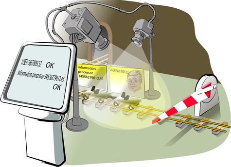
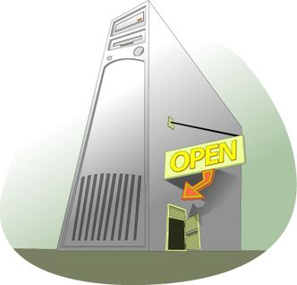
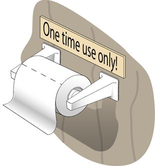
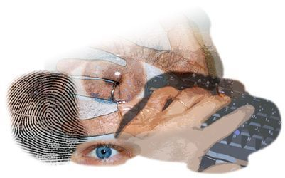
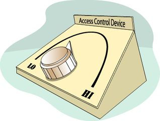

Copyright © This course contains materials from "Survivability and Information Assurance" (copyright 2005 Carnegie Mellon University) with special permission of the Software Engineering Institute at Carnegie Mellon University.
- Table of Contents
- 1. Principle 5: Identification of Users, Computer Systems, and Network Infrastructure Components Is Critical
- 2. Reading Assignments
- 3. Principle 5: Identification of users, computer systems, and network infrastructure components is critical.
- 4. Learning Outcomes
- 5. Topics
- 6. Topics
- 7. Information Security Principles
- 8. Authentication
- 9. Integrity
- 10. Non-repudiation
- 11. Topics
- 12. Authenticating Users
- 13. Types of Authentication
- 14. The Strongest Authentication
- 15. Something You Know
- 16. Password Guidelines
- 17. Username and Reusable Passwords-Something You Know
- 18. Something You Have
- 19. Tokens - Something You Have
- 20. Something You Are
- 21. Biometric Methods - Something You Are
- 22. Downside of Biometrics
- 23. User Authentication Methods
- 24. Using Password Auditing Tools
- 25. Summary: User Authentication
- 26. Topics
- 27. Hosts Also Need To Authenticate
- 28. Digital Certificates
- 29. Public Key Infrastructure
- 30. Summary
- 31. Exam
1. Principle 5: Identification of Users, Computer Systems, and Network Infrastructure Components Is Critical

This module shows the basics of authentication and what it entails.
System administrators secure access to information assets (data) based upon user and host identification. The scheme an enterprise uses must have the following characteristics:
It must be reliable. The scheme must identify the same user each time it is used.
It must be strong. The scheme must not allow user impersonation. Weak schemes such as those that use a login and password pair make impersonation too easy.
It must be usable. Users ultimately have to use an identification scheme. If it is too complicated, they'll look for ways to get around it to do their jobs, usually sacrificing security.
This module will discuss the details of authentication with respect to those three characteristic points.
This module should take 4 hours, including Guided Tours and Class Discussions.
The required reading must be done in advance of this class and students will be quizzed on the materials.

2. Reading Assignments
Required readings:
A Practical Guide to Biometric Security Technology [Liu 01]
One-Time Passwords [Pomeranz 00]
Public Key Infrastructure (PKI): An Overview [T4]
Recommended readings:
The ABCs of PKI [McKinley 00]
The Need for Host Authentication [Moskowitz]
Guide for Securing Your Web Site for Business [VeriSign]
No matter how strong the information access technology, if it is based on weak user identification, it is effectively irrelevant. System administrators need to know that reliable, strong, and usable user identification is the foundation upon which restricting access to information assets is based. To achieve these goals, they need to have the appropriate technology and necessary policies to compliment that technology.
Information processors (called infoprocs) include computer systems and related network infrastructure components. Infoprocs need to be identified in a reliable, strong, and usable manner. For example, system administrators ought to know with a high degree of certainty that the computer system to which they are making a network connection is the one they believe it to be. Also, system administrators must know that the infoprocs attached to their network infrastructure are the only infoprocs so attached and that they have not been impersonated. Securing an enterprise requires appropriate technology and policy.
3. Principle 5: Identification of users, computer systems, and network infrastructure components is critical.

Principle 5: Identification of users, computer systems, and network infrastructure components is critical. Since access to critical information assets is based upon user and computer system identity, it is critically important that identification of users and computer systems be strong, repeatable, and reliable.
4. Learning Outcomes
Why user authentication is important to data security
Commonly used user authentication schemes
Why computer host authentication is important to data security
Commonly used host authentication schemes
After completing this module, you will be able to describe and apply these authentication concepts.
5. Topics
Authentication overview
User authentication
Passwords
Biometrics
Digital signatures
Computer system authentication
Digital certificates
These are the topics covered in this module.
6. Topics
Authentication overview
User authentication
Passwords
Biometrics
Digital signatures
Computer system authentication
Digital certificates
Information security starts with the authentication required to access restricted resources. If a user makes changes to restricted data, information security also requires the ability to detect whether the data has been changed and the ability to provide evidence about the identity of the user or system that changed the data.
7. Information Security Principles
Access control lists protect data by restricting the use of data to valid users.
Cryptography protects data from disclosure if the data should be intercepted by users other than those for whom it was intended.
Authentication protects data by identifying users and leverages cryptography schemes to provide other benefits.
Authentication methods
Integrity
Nonrepudiation
Access control lists are one method employed by infoprocs to restrict and define what level of access to data is allowed on a system. However, typically ACLs are only effective when accessing stored data. Data that is being processed or transmitted is subject to being intercepted by unauthorized users. To prevent unauthorized data in these states, encryption is used to restrict access. PKI methods of encryption are dependent on keeping the keys secret from unauthorized use. Remember Principle 2: Everything is data.

Proper identification of users or computer systems requesting access to data restricted by ACLs or encryption is a fundamental component of information security, which will be discussed in detail in this module. Combined with cryptography methods and tools, procedures can be put in place to provide three of the tenets of information security:
Authentication
Integrity
Non-repudiation
|
The front door of a computer system Reliable? Unfortunately not! Discuss how to improve identification process |
 |
Most access to your house is through the front door, and that door is usually locked. Family members have their own keys and may come and go as they please. Others going in must first past inspection at the front door where they are either recognized or have their identity verified in some way (ID card, official papers, etc.). There is usually only one front door and it is usually clearly identified for all who seek entry.
Once someone has gained access to the house, they usually have access to everything in the house, though in our analogy, a file cabinet and encryption further guard some very sensitive information. This "defense in depth" approach grants layers of access to those who have any access at all. There are outsiders, insiders, and trusted insiders.
Access to the house is usually regulated by policy as well. Those with keys are told to guard those keys and not loan them to others. Procedures also constrain access to keys. For example, a key is not prominently displayed for all to use in or around the front door, though looking under the front door mat may produce a key available for any who finds it.
Access to a computer system is similar to access to a house through the front door. That access is usually through a login procedure that traditionally prompts you for a name and some identifying information, typically a password. This is the "door" to the system that most users must go through. Those with a valid login/password pair (keys to the house) are granted access. Note that just as a burglar can pick a lock, an intruder can do this as well by obtaining a login/password pair by any of the well-known means (sniffing, shoulder surfing, keystroke monitoring, or brute force cracking).
There are policies and procedures governing logins and passwords as well. For example, users are often strongly cautioned against sharing their login and password pair. Posting passwords on the infamous yellow sticky on a computer's monitor is also strongly discouraged by policy.
In general, access to a computer system through the front door is based upon the reliable identification and authentication of people to that computer system. Once identified and authenticated, those people are considered users and are granted certain privileges and rights to carry out tasks on that system. Users carry with them a set of credentials that identify who they are and that define the set of rights that have been granted to them. These credentials are carried as part of every program that runs on a computer system. They are presented to the operating system as a way to access information assets and services provided by the operating system.
If the process by which a person identifies himself or herself to a computer system was truly reliable, this discussion would be at an end. Unfortunately, this is not the case as the traditional methods used by most modern day computer systems to identify users are eminently unreliable. If the identification scheme can be breached, then ACLs cannot properly guard the information assets in question. Therefore, it is fundamentally important to accurately identify a person to a computer system so that the credentials they acquire through that identification process are correct.
8. Authentication
With respect to network traffic, the ability of a receiver of a message to be sure of the origin
Prevents "masquerading" by attackers
Accomplished through digital signatures
Authentication is the process of determining whether someone or something is who or what it declares itself to be. Passwords, security cards, and biometric solutions are often employed as methods to provide user authentication. With respect to computer systems, the use of digital certificates, which include a digital signature and are issued and verified by a certificate authority (CA) as part of a public key infrastructure, are considered likely to become the standard way to perform authentication on the Internet. The digital certificates are our means to provide strong authentication-even across the un-trusted Internet. These methods of authentication will be discussed in detail later in this module.
9. Integrity
The ability to verify that a message has not been modified between sending and receipt
Prevents attackers from changing messages in transit
Accomplished through digital signatures
Integrity, in terms of data and network security, is the assurance that information can only be accessed or modified by those authorized to do so. To ensure data integrity, we can use some of the principles of cryptography. We can use digital signatures, which we will discuss later, to verify that messages have not been tampered with in transit.
10. Non-repudiation
A sender should not be able to deny sending a message when he/she was in fact the sender.
Prevents individuals from being able to send messages and deny that they were the author
Accomplished through digital signatures
In general, non-repudiation is the ability to ensure that a party to a contract or a communication cannot deny the authenticity of their signature on a document or the sending of a message that they originated. On the Internet, the digital signature is used not only to ensure that a message or document has been electronically signed by the person that purported to sign the document, but also, since a digital signature can only be created by one person, to ensure that a person cannot later deny that they furnished the signature.
Since no security technology is absolutely foolproof, some experts warn that the digital signature alone may not always guarantee non-repudiation. It is suggested that multiple approaches be used, such as capturing unique biometric information and other data about the sender or signer that collectively would be difficult to repudiate.
11. Topics
Authentication overview
User authentication
Passwords
Biometrics
Digital signatures
Computer system authentication
Digital certificates
12. Authenticating Users
Authentication uses methods where users prove to the host that they are who they claim to be.
Since privileges on a host are usually tied to accounts and users, the authentication allows each user to exercise those privileges.
The method of authentication permits the ACLs to work - so ACLs are only as strong as the authentication scheme!
The first line of 'defense' with respect to protecting assets on a computer system is in making sure that the system knows 'who' those communicating with that system are. The most basic way of determining who the individuals are is to ask them and to have them tell you. This is essentially 'identification'-and is the first step in knowing who the individual (in this case, a person or another host) is.
The next step is 'authenticating' the individual-to make sure they are who they say they are. The steps to authentication will be covered later in this module.
Once individuals have been authenticated, the system then allows them to perform tasks, start processes, access data, and communicate with the network and other devices based on a set of controls, known as access controls, which are tied to that individual's attributes. On most modern operating systems, this means attributes which are tied to the actual individual as well as the group(s) to which that individual belongs.
The biggest challenge in setting up access controls in an operating system's file system is usually NOT the use of interfaces to set those permissions. Instead the challenge is discovering what level access is appropriate. The question quickly becomes how does the administrator know which identities need what type of access to properly use the data items in question?
As will be discussed in more detail later in this module, a program runs with a set of credentials that identify the entity (logged in user) and a set of rights and privileges to which that user is entitled. The key is to minimize the access that a program, operating on behalf of the user, has to information resources on a computer system (e.g., the file system, functions within the kernel, access to the network, etc.). For now, the issue is the task of determining the set of information resources accessed by a program.
Unfortunately, vendor documentation usually does not provide enough guidance to help the administrator answer these questions. The information resources that programs use (files, directories/folders, and registry entries on Windows-based systems) and the way they are used (read, write, and execute) must be determined through brute-force techniques. Fortunately, there are tools available to learn how programs interact with these resources.
13. Types of Authentication
Multiple types of authentication based on different 'factors'
Three 'factors' which can be used to authenticate:
Something you have
Something you know
Something you are
When thinking about authentication, it's possible to divide the main methods used to complete the authentication process into three groups:
Something you have
Something you know
Something you are
There are not really any other ways to 'challenge' an authenticating user and to have them respond in a meaningful way than those three methods.
Obviously, each method has benefits and drawbacks. The pages that follow show how these three 'factors' work.
14. The Strongest Authentication
In the best possible protection scheme, identifying a person to either a house or to a computer system combines something you know, something you have, and something you are. However, forcing people to use all three at each login may be cumbersome to the point of rendering a computer system unusable. In lieu of using all three, many advanced identification schemes use what is called two-factor authentication, where only two of the three are required to successfully identify a person.
Using overlapping protections are best only when they lack common weaknesses. For example, if a user chooses a password that is identical to the number appearing on their magnetic identification card, it defeats the purpose of having two unique factors in providing authentication.
15. Something You Know
Access to the safe in your office or home uses something you know, namely the combination, a sequence of numbers and left/right rotation directions of the tumbler.
A user name is the login part of the login/password scheme that is the backbone of most computer system identification subsystems. It is often unchanging and is therefore a likely candidate for capture and reuse. Passwords are also something that you know and are traditionally six to ten characters long. Personal identification numbers (PINs) are usually shorter, and pass-phrases are usually longer.
Most computer systems limit their requirement for identifying information to something you know, which is traditionally a username/password pair.
16. Password Guidelines
Use one-time passwords wherever possible
If you must use reusable passwords
- Avoid trivial and easily crackable passwords
- Protect password data against unauthorized access
- Educate all users regarding the critical importance of protecting password confidentiality
Ensure that all accounts have passwords for all systems and network components
Replace all vendor-supplied passwords for all systems and network components
The bottom line is that the something you know-a password-is susceptible to discovery through brute force cracking and through sniffing, where either network packets the keystrokes entered at a computer system are captured. Note that no matter what policy or rules are used by an organization, if reusable passwords can be sniffed, then an intruder can use them to gain access to an account. If at all possible, stay away from reusable passwords. If that is not an option, then the best practice is to establish policy backed up by technology that enforces the use of strong passwords.
On most Linux/Unix systems, the standard password cracking support library, Cracklib, is installed and integrated into the password-changing scheme. This means that users cannot select passwords that would be discovered through standard brute force means.
To require strong passwords in Windows operating systems, you'll need to open the Group Policy snap-in within a Microsoft Management Console. Microsoft's Technet website provides details on how to implement strong passwords. (http://technet.microsoft.com/en-us/library/cc875814.aspx)
No matter which operating system you use, make sure that the password data has the highest level of protections available. This means setting all related ACLs appropriately and concealing password data where possible.
Finally, people need to know that intruders can easily attack reusable password schemes by sniffing networks and keystrokes. They need to be aware of the communication path over which passwords travel and the security of the hosts being used. Often the best thing to do may be to not login to a system because of the information exposed along that pathway.
Administrators should be certain that all accounts have passwords and that any vendor-provided accounts get new passwords immediately after activation.
In summary, reusable passwords are just that-reusable. That reuse comes traditionally from the person logging in but it continues to come from intruders who discover passwords through brute force cracking and sniffing techniques. If reusable passwords are avoidable, then avoid them wherever possible. They continue to be a frequently used method of attack.
17. Username and Reusable Passwords-Something You Know
|
Problems
|
The combination to the safe in your office is similar to a reusable password. Reusable means that the same method is used each time access is desired. If that reusable combination can be captured, then somebody else can use it to open the safe. All it takes is the set of numbers in the combination and the crafty burglar can get in whenever he wants.
On most computer systems today, the user identification scheme relies on reusable passwords. This scheme suffers from two major flaws:
The information asset associated with the password is available to more users than is necessary. This means that some form of the password, normally an encrypted version, is stored somewhere on the system where the person logs in. Examples are in files and in the address space of a process validating identity. If those locations can be somehow breached, then the encrypted version can be viewed and used in an attack.
Recall the previous discussion on securing information assets through access control devices. Given that this password data is information, the same techniques for securing it also apply. The strongest ACLs should be used, and encryption beyond that. From the information security model discussed in Principle 2: Everything is data, the goal is to secure assets everywhere they reside, and whenever possible.
On Linux- or Unix-based systems, the encrypted form of passwords resides in either the world-readable /etc/passwd file or the root-only readable /etc/shadow file. In the former case, any user can read the file whereas in the latter, root privileges must be gained first. In either case, once the encrypted form is read, brute force techniques can be used to discover the clear text form of passwords. While most modern systems support shadow passwords, they may need to be enabled on your system. Consult your system documentation to learn how to enable shadow passwords. For example, on most Unix and all Linux systems (used for Guided Tours, Demonstrations, and Exercises throughout this version of the SIA Curriculum), shadow passwords are enabled through the system installation tool.
On Windows-based systems, a form of passwords appears in the address space of the lsass (the Local Security Authority Subsystem) process. If the Security Access Manager (SAM) database in the registry is obscured, then the form that appears in the lsass is a non-obscured version. If the lsass's address space can be compromised, then the version found there can be used to discover the clear text form of passwords.
As you secure these user identification information assets against intruders, make sure that the strongest possible ACLs are in place, and beyond that, the strongest possible encryption that your system provides. Consider all of the places that identification information resides. In the case of Windows-based systems, obscured forms of passwords appear in the virtual address space of a process. The same is also true on Linux- and Unix-based systems, where the password may actually appear in the clear in processes such as login and any other program that prompts for a password. If access to the virtual memory of those processes or to the physical memory of the host computer can be compromised and the data read, then passwords can be captured. The key is to recognize that this identification data is information and must be protected as such.
Reusable passwords are easily captured and used by intruders. In many cases, applications such as telnet and e-mail clients transmit their login and password information in the clear across a computer network. This means that they can be captured through sniffing and replayed, giving unwanted access to others.
One example of such a sniffer is dsniff [Song] that listens on the network for keywords such as login and password and displays the contents of the reassembled packets that directly follow them.
Through techniques called key logging, keystrokes entered at the keyboard, all mouse clicks, etc. can be captured. One such programs is SpyEye (a trojan, which is a backdoor into a system that allows attackers access.). It silently monitors your PC, intercepting keystrokes and saving them to a text-based log file.
The result is a clear picture of all activity that has transpired on a PC. Users won't see the program in the task list, task bar, or system-tray area. For added security, the administrator can choose to encrypt the log file with some keystroke loggers. Several settings are available to customize the behavior of the program: Mouse clicks, control keys, keyup events, and keydown events can be recorded.
18. Something You Have
At home, the something you have is the house key and all who have it have access to the house independent of any other means of identification.
Some computer systems use smart-cards. A smart-card is a device that is about the size of a credit card and may have a processor of its own. There are many types and the use of this technology is increasing. To learn more about smart-cards, visit a Web site such as the CompInfo site that has lots of background and product information [CompInfo].
Many smart-cards support multiple functions. Some cards can provide authenticated access into the physical security of buildings and rooms as well as computer systems. Others have been integrated into time-card systems for keeping track of hours worked, etc.
19. Tokens - Something You Have
|
One-time passwords-what are they? Randomness concerns Challenge/response Soft tokens vs. hard tokens
|
 |
A person wishing to gain access to information assets must first identify himself or herself to the computer system where those assets reside. Usually this requires that the person log into that computer system with a password. If that system supports one-time passwords, then the password part of the login/password pair works only once and is then no longer valid. One-time password methods defeat sniffing because the captured password doesn't work a second time. This means that there is little or no concern about the communication channel over which they travel.
Key to one-time passwords is true randomness. Imagine that the one-time scheme was weak, meaning that the next one-time password in the sequence could be computed or guessed. For example, if the first password in a one-time password sequence was AAAAA and the second was bbbbb, it seems reasonable to conclude that the next password in this sequence could be CCCCC. While these are indeed one-time passwords-they are only good one time-they are predictable and therefore weak. So, one-timeness is also a characteristic of one-time passwords.
One-time passwords frequently use a challenge/response scheme where the computer system being logged into issues a challenge to which the prospective user must respond. The means to manufacture that response often comes from some type of hand-held device-the something you have. It uses the same algorithms as the host computer system. Host and user both use this device to computer the correct response to the challenge. If the user's response to the challenge matches the one generated by the host, the user is properly identified and then authenticated to the system. Most of the hand-held devices also require a login so that simply having the device is not sufficient to compromise the integrity of the login process. It is this combination of something you know (the login to the hand-held) and the something you have (the hand-held itself) that improves the quality of the login scheme.
One-time password implementations come in two general types-soft tokens and hard tokens. Soft tokens-tokens computed through software-are cheaper to operate. Some implementations even use Java as the programming language. Since they traditionally operate on a computer system, they can be compromised by the traditional techniques used to compromise other software systems.
To improve the level of security of one-time passwords, use a hard token-based scheme. There are many products in the marketplace that do one-time password schemes, including the following:
S/Key [Walsh 96]
SecureID
CryptoCard [CryptoCard]
One-time password methods use software and hardware to improve security by more strongly identifying the person attempting to login to a computer system. Through a combination of what you have and what you know, those allowed access to information assets are more clearly separated from those not allowed such access. The technologies available today are cost effective, user-friendly, and easily integrated into most modern operating systems.
20. Something You Are
If you don't have a key to the house, another means of gaining entry is by being recognized by the person who opens the door. Your face conveys who you are. It is presumed to be difficult to copy and is therefore a reliable means of identification.
Signatures are an interesting means of identification. Have you ever purchased something from a store using a credit card? What do clerks do with the card? Do they even bother to check to see whether your signature matches the one on the card, or do they just hand the card back to you without even bothering to compare the handwriting?
On a computer system, physical attributes (something you are) can be another means for identifying users to a computer system. We'll talk more about these in light of biometrics.
21. Biometric Methods - Something You Are
|
Physical
|
Behavioral
 |
Biometrics identification methods represent an opportunity to use the unique features of a person as the way to identify and subsequently authenticate people to computer systems. The fundamental premise of biometric methods is that we are all unique somehow and these unique features can be used as a reliable means of identification.
Biometrics information can be classified in two ways: physical characteristics of a person and behavioral or patterns-of-action characteristics. Physical characteristics used in biometrics identification methods can include fingerprints, thumbprints, retinal patterns, facial recognition, the iris, hand, and patterns of veins. These attributes are presumed to be difficult if not impossible to counterfeit, though in the James Bond movie Never Say Never Again, a retinal scan technology was defeated and in Gattaca, a multi-sample DNA-based authentication scheme was foiled.
Behavioral characteristics attempt to uniquely identify a person based on how they act, again presuming their actions to be unique or difficult to reproduce. Among the attributes sampled are voice, signature, and keyboard typing skills.
At home, we use biometrics to identify the person at the door. Perhaps we recognize them, so we are examining their faces, their voices, or other physical attributes before granting access. If we don't recognize them, we probably do subconsciously categorize them by their physical appearance before taking a chance to let them in.
On computer systems, products that use biometrics are coming to market. Some are affordable and therefore practical alternatives for identifying people to computer systems:
Digital Persona's U.are.U [DigitalPersona] is a fingerprinting recognition product. This comes in both personal and professional versions and is integrated into Windows XP's fast user switching feature.
Sony's FIU-700 [Miles 00a] is a credit card-sized device that verifies the user's fingerprints to allow access to networks, computers or individual applications. The add-on device can be connected to a computer via the USB port and works with either Windows 98 or Windows 2000.
In fact, support for biometric devices is now part of Windows XP, Vista, and Windows 7. Here's an excerpt from a news story on this topic [Miles 00b]:
Microsoft is swapping passwords for fingerprint readers and retinal scanners.
The software giant today said it has entered a pact with security software firm I/O Software to integrate the company's Biometric API (application programming interface) directly into Windows operating systems. Windows users could opt to have their identities verified through fingertips or other physical characteristics, rather than traditional passwords.
Riverside, Calif.-based I/O Software offers security products that verify identities--and correspondingly limit or allow network access--through fingerprints, irises, retinas, voices and faces. The technology is available with Windows 95, Windows 98 and Windows NT; Windows 2000 support is expected this summer, the companies said.
Biometric technology matches stored 2D and 3D images of an individual's body parts with the person. These systems often can compensate for aging, weight gain and other variations. The sheer volume of topographic data captured on a typical stored image also serves to deter fraud: Wearing a Bill Clinton mask won't likely get someone past a biometric firewall.
22. Downside of Biometrics
Inaccuracies in the verification process
Requires more powerful hardware
Possibly threatens user privacy
No identification and authentication scheme is foolproof and biometrics is no exception. In addition to the computational requirements needed to boost accuracy, the information captured challenges privacy issues and personal rights. For example, from a fingerprint alone, you may be able to determine people's daily activities (calluses obscuring the prints may mean a laborer, smooth prints may mean an office worker), their health, their sex, or their race. The key is to simply be aware that biometric information may convey much more than the identification information that the participants intended. Here is an excerpt from Can Biometrics Help the Army Solve An Identity Crisis? [RAND 01] on this issue:
Information Privacy
By far the greatest concern was about an individual's ability to control personal information. Not surprisingly, misuse of the information ranked high on the list of information privacy issues. Widely publicized accounts of identity theft and financial loss stemming from it have made people nervous about any information that could enable someone to assume their identity. Biometric data, though more complex than most passwords, can also be stolen or copied, so any attempt to develop a system using it must take these concerns into account.
Misuse is not the only information privacy concern. Some worry about "function creep" - that is, using information collected for one purpose to do something else. These secondary purposes may be perfectly valid, but if people have not been informed about the new use and have not consented to having information about them applied to it, they could object. Another worry is that biometric information will enable a third party to track an individual's actions or search databases to get information about them. Using a biometric to participate in routine daily activities (e.g., entering or exiting buildings, making financial transactions) leaves a detailed record. This capability bothers many people, who worry that some biometrics may allow their activities to be monitored without their knowledge or consent.
Physical Privacy
Unlike some other identifiers-a Social Security number, for example-biometrics raise issues of physical privacy. One is that certain biometrics carries a stigma. Fingerprints, for example, are widely associated with criminal activity. Another issue is concern about actual physical harm. While the research team found no biometric that causes such harm, it nonetheless troubles some. For example, retinal scanning techniques require individuals to place their eyes close to a camera lens, a requirement that makes some people uneasy. Hygiene issues also concern some. The need to place a hand or finger on a sensor plate can prompt fear about the spread of disease.
Other issues in deploying biometric systems involve the physical limitations of employees. For example, how can people be identified through a retinal scanner if they have no eyes or through a fingerprint scanner if they have no hands?
To learn more about biometrics, including the issues related to errors rates, see A Practical Guide to Biometric Security Technology [Liu 01].
23. User Authentication Methods
Questions to ask
Quality of reliable identification?
Needs client-side hardware?
Needs client-side software?
Deployment costs?
Work with legacy systems?
Secret password is still most popular form
Why?
In general, it is more secure to use multiple forms of authentication, that is, a security token combined with a password. These types of authentication may be further characterized in the following table:
Table: User Authentication Methods
Characteristic | Something You Know (Secrets) | Something You Have (Tokens) | Something You Are (Biometrics) |
|---|---|---|---|
|
Reliable identification/authentication? |
Good |
Very good |
Excellent |
|
Requires client-side hardware? |
No |
Sometimes |
Yes |
|
Requires client-side software? |
No |
Sometimes |
Yes |
|
Typical deployment cost/user |
$0 |
$50 |
$100 |
|
Works with legacy systems |
Yes |
Sometimes |
Sometimes |
Due to cost and compatibility with legacy systems, the most popular form of user authentication continues to be a secret password. The next section details how to use the authentication methods of Linux/Unix and Windows 200x.
24. Using Password Auditing Tools
Intruders acquire and use tools that enable them to compromise systems
sophisticated tools make password auditing easy
if the prize is big enough, intruders are patient
Know what the intruders know about you
Again, make certain that you have the authority in writing to perform password "strength testing" (cracking) before you engage in it.
Password auditing tools are available, sophisticated, and extensible. Some are free and those that are commercial are affordable. Auditing passwords is no longer bounded by the intellectual capacity of an intruder-anyone can do it.
Even though brute force methods may take days or even weeks to achieve success, this should not be viewed as a large enough deterrent to a would-be intruder. If the prize to be claimed by gaining access through a password audit is sufficiently big, then the intruder will likely be patient enough to wait until the audit finishes.
The time it takes to discover a password should be longer than the useful lifetime of the information assets it guards. For example, if an intruder takes six months to crack a password at a bank, chances are good that after that period, the bank will still be a bank and the discovered password will still be useful. In contrast, decrypting a session key used for an e-commerce transaction is time-critical. Today's technology may be insufficient to help the intruder use the information gleaned by cracking the network traffic generated by that transaction.
It is important that a systems administrator know about their systems what the intruders may also know about their systems. This gives rise to the whole concept of running proactive vulnerability testing tools. An organization's test environment provides an excellent means to conduct carry out this task without harming the production infrastructure.
Finally, learn from history. Read about a well-meaning system administrator who felt that password auditing was in his purview but his employer did not [EFF]. The lesson to learn is to have the authority in writing to conduct an audit. If you don't have that authority, don't do it, tempting as it may be to improve the security of your site.
25. Summary: User Authentication
|
Access control devices based upon user identity Relies upon unimpeachable identification But it's not unimpeachable, so improve it
|
 |
The main problem that systems administrators need to address is how to grant access to information assets as defined by an organization's asset usage policies. As part of the solution to that problem, administrators must adjust the available controls that limit access to those resources. At the basic level, those adjustments are contained within the operating system. Fortunately, most modern operating systems provide almost all of the necessary controls to limit that access. The controls used most often are the access control devices known as access control lists. Setting ACLs in accordance with usage policies is a tedious and sometimes difficult job, but through the techniques described earlier in this module, it can be made more manageable.
Key to using ACLs is the assumption that people have reliably identified themselves to the computer system. Once identified, these users are granted privileges and rights that enable them to carry out their duties and responsibilities on that computer system.
If it is possible for one person or a user to electronically impersonate another person or user, then administrators cannot rely on the access-to-information-assets model. This means that the information assets in question cannot be secured in accordance with an organization's policies.
Therefore, it is profoundly important that the methods and technologies used to discriminate access to information assets be anchored by as strong an identification scheme as the organization can pragmatically and financially tolerate. This section of this module has discussed how traditional identifications schemes (login and reusable passwords) work and their weaknesses. The next concept discussed was one-time passwords as an improvement over reusable passwords. This section ended with a discussion of biometrics.
So far in our house analogy, we've got some information assets in a locked file cabinet in one of the rooms in the house. We know that that house has a front door that is usually locked. Those who have keys have access to the house, but they need a key or the combination to the file cabinet to gain access to the guarded assets. Indeed, those assets may be of such importance that they are encrypted to render them useless to all but those who know the specifics of the decryption operation.
We will continue to build our house and shore up its defenses and at the same time relate those defenses to computer systems.
26. Topics
Authentication overview
User authentication
Passwords
Biometrics
Digital signatures
Computer system authentication
Digital certificates
PKI
Reading Assignment
There are a number of good resources on the Internet that provide an insight into host authentication. The following, from the recommended reading, are resource that will help you familiarize yourself with these topics:
The Need for Host Authentication [Moskowitz]
Guide for Securing Your Web Site for Business [VeriSign]
27. Hosts Also Need To Authenticate
Just as users need to authenticate, so do hosts when they are communicating.
The nature of IP makes this impossible at the network layers in current deployments.
Applications must then use authentication for hosts-just as they would for users.
One example of this is digital certificates, another is Public Key Infrastructure (PKI).
In just the same means that users authenticate, other hosts must also authenticate to the system in question in order to establish the identity of the authenticating host. In fact, in many ways the authentication of hosts to each other is both more difficult and more important in the grand scheme of IT systems. Unfortunately, there are few mechanisms built into any well-deployed protocol (such as IP) to do this host authentication itself. It has therefore been up to application developers to develop and deploy host authentication steps.
Nearly all of these host authentication schemes have depended on cryptography-through public/private keys and a digital 'verification' system. The two which will be discussed in this module, Digital Certificates and Public Key Infrastructure (PKI), are no different.
28. Digital Certificates
An answer to the Internet trust problem
Provided by trusted third parties
A digital certificate is an assurance provided by a third party (called a certification authority) that a public key does indeed belong to the purported owner. Thus it binds an identity to the public key. The identity, or subject name, may be that of a person, corporation, or some other entity such as a Web server.
Digital Certificates are also called digital IDs. Digital IDs are the electronic counterparts to driver licenses, passports, and membership cards. You can present a digital ID electronically to prove your identity or to validate your rights to access information or services online.
Digital IDs bind an identity to a pair of electronic keys that can be used to encrypt and sign digital information. A digital ID makes it possible to verify someone's claim that they have the right to use a given key, helping to prevent people from using phony keys to impersonate other users. Used in conjunction with encryption, digital IDs provide a more complete security solution, assuring the identity of all parties involved in a transaction.
A Digital ID is issued by a CA and signed with the CA's private key. When using public resources such as those found on the Internet, trusted third party CAs (such as VeriSign, Inc.) are used. However, within an enterprise's intranet, a server can act as a local CA among the users and computers to provide authentication within the scope of that intranet.
Digital Certificate Contents
A digital certificate (a.k.a. digital ID) typically contains the:
Owner's public key
Owner's name
Expiration date of the public key
Name of the issuer (the CA that issued the digital ID)
Serial number of the digital ID
Digital signature of the issuer
X.509
The certificate contains, among other fields, a serial number, the subject name, the subject's public key, and the issuer's name. The issuing CA, digitally signs the certificate to provide integrity protection and assurance that the certificate is authentic.
The most widely used standard for defining digital certificates is X.509. It is actually an ITU recommendation, which means that it has not yet been officially defined or approved. As a result, companies that issue digital certificates, as well as companies that create software that use digital certificates, have implemented the standard in different ways. For example, Netscape and Microsoft both use X.509 certificates in support of Secure Socket Layer (SSL) in their Web servers and browsers. However, an X.509 Certificate generated by Netscape may not be readable by Microsoft products, and vice versa.
29. Public Key Infrastructure
Public Key Infrastructure
Very secure certificate based authentication
Issuing certificates to all users and hosts and managing them is a difficult task
Hosts and users have a public/private key pair and the public portion is stored on a PKI server.
Requests from the host/user can then be independently verified as the authenticating host can check with the PKI systems to ensure all certificates match.
Use of Public Key Infrastructure (PKI) to authenticate remote users and hosts has some distinct advantages. It relies on 'something you have' as well as the 'something you know.' The something you have is your private key or digital certificate. The something you know is a pass phrase or PIN. The requirements for strong PKI authentication include:
Every remote user must have a smart card or other media that contains their Private Key.
Every remote user must know the Public Key of its home authentication server.
Every remote user must have a unique Identification that should be created and distributed by the authentication server.
Every Public Key must be registered with the authentication server and must only be retrieved by providing a means for its authentication.
The authentication server may act as a broker for the retrieval of Public Keys of nodes that belong to different domains.
The keys must be refreshed periodically to reinforce the security of the system.
Every remote host MUST have the capability of performing cryptographic calculations such as encryption.
In order to communicate with the network, the remote user must provide information to prove its identity to the authentication server.
Every mobile entity, including the corresponding node, MUST support at least the SHA-1 or MD5 algorithms.
30. Summary
|
Identification of users and computer systems is a significant job. Methods used for user identification
Methods used for computer host identification
|
|
Identification of users, computer systems, and network infrastructure components is critical. Since access to critical information assets is based upon user and computer system identity, it is critically important that identifying users and computer systems be strong, repeatable, and reliable.
31. Exam
Exam - Principle 5: Identification of Users, Computer Systems, and Network Infrastructure Components Is Critical